Custom map format
V1 defines engine-native rooms. V2 is backward-compatible and adds namespaced symbolic tiles, a map-wide sprite sheet, per-tile sheet overrides, and optional deterministic map Lua. Both use the fixed native room dimensions.
Package and engine limits
maps/map_id/
data.json
data.map
tiles.png # V2 optional
map.lua # V2 optional| Source room | Exactly 33 columns × 12 rows |
|---|---|
| Source rooms | 1..9, ordered center outward |
| Final layout | Center plus mirrored outer copies: 2n − 1 rooms |
data.json / data.map | 4 MiB each |
map.lua | Direct non-reparse file, 256 KiB |
| Package safety | Folders beginning with _ ignored; map folder and package files may not be reparse points |
V1 does not support variable room dimensions, asymmetric final layouts, custom glyph definitions, or room callbacks. Those constraints cannot be relaxed without a new format/native generator contract.
V1 data.json schema
{
"format": "eggnogg-map/v1",
"id": "combat_caverns_plus",
"name": "Combat Caverns+",
"author": "potato",
"description": "Optional text",
"sort_order": 0,
"rules": {
"mode": "swords",
"round_end_rooms": "inner_only",
"score_target": null,
"armed_respawn_limit": 4
},
"layout": {
"kind": "mirrored_source_rooms",
"room_format": "vanilla_33x12",
"order": ["center", "outer"]
},
"defaults": {"room": {"ambient": "none", "appearance": {}}},
"rooms": {"center": {"ambient": "dust", "hook": null}}
}| Field | Contract |
|---|---|
format | Required: eggnogg-map/v1 or eggnogg-map/v2. |
id | Optional V1 stable id (folder fallback); required namespace-compatible id for V2. |
name, author | Required selector metadata. |
description | Optional free text. |
sort_order | Optional integer, default 0. Custom sort is order, name, folder id. |
rules.mode | swords or karate; changes natural spawn loadout only. Map-authored * pickups remain. |
rules.round_end_rooms | inner_only (default) or any. |
rules.score_target | Positive integer or null. |
rules.armed_respawn_limit | Integer, default 4. |
layout.kind | Required mirrored_source_rooms. |
layout.room_format | Required vanilla_33x12. |
layout.order | Nonempty unique room ids from center outward; each must exist in data.map. |
rooms.*.hook | Reserved; omitted or null. Non-null is an error. |
Room ambience and appearance
Ambience accepts integer 0..9 or: none (0), bugs, clouds, art, flies, drips, dust, bats, bubbles, and boil/fumes (9).
"appearance": {
"primary": {
"fg1": [1,1,1], "fg2": [1,1,1],
"bg1": [0,0,0], "bg2": [0,0,0],
"water": [0,.2,.4], "water_hi": [.5,.8,1],
"special": [1,1,1], "special2": [1,1,1]
},
"mirror": {"bg1": [.1,0,.2]}
}Each color is exactly three finite channels in 0..1. Per-room fields inherit field-by-field from defaults.room; omitted mirror values inherit the fully resolved primary bank. These values are presentation-only. Water placement/hazard behavior comes from data.map.
data.map grammar
; comments outside rows begin with ; or //
[center]
"@@@@@@@@@@@@@@@@@@@@@@@@@@@@@@@@@"
" "
... exactly 10 more quoted rows ...- A header
[room_id]starts each room. - Exactly 12 quoted rows follow; exactly 33 bytes appear inside each pair of quotes.
- Leading/trailing spaces inside quotes are cells and must be retained.
- Blank and comment lines are allowed only outside quoted rows.
- V1 rejects unknown characters rather than silently treating them as empty.
Allowed V1 glyphs:
space ! # ( ) * + - . 1 2 : = ? @
A C E F G H I K L N O P Q S T W X Y Z
^ _ ` c e f i l m q s t u v w x | ~Native glyph reference
The preview shows the in-game result. Animated and multi-tile previews show behavior that is not visible from one cell.
| Glyph | Preview | Output | Meaning / notes |
|---|---|---|---|
space | Empty | tile 0x14, colouring_action, frame 0x00, arg 0x00 | Empty/open filler. . behaves the same way. |
. | Empty | tile 0x14, colouring_action, frame 0x00, arg 0x00 | Same as space. |
! | 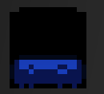 | tile 0x03, floor_action, frame 0x00, random arg | Floor/platform variant. |
# |  | tile 0x15, colouring_action, frame 0x2D, random arg | Brick outline decoration. |
( | 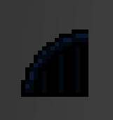 | tile 0x14, colouring_action, frame 0x6A, side-bit arg | Left half of an arch. |
) | 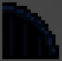 | tile 0x14, colouring_action, frame 0x6B, side-bit arg | Right half of an arch. |
* | 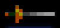 | tile 0x1C, spawn_thing_action, frame 0x00, arg 0x02 | Sword spawn. Works in karate mode. |
+ | 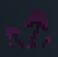 | tile 0x16, colouring_action, frame 0x5D..0x5F, arg 0x00 | Mushrooms. |
- | 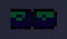 | tile 0x15, colouring_action, frame 0x3C, arg 0x00 | Horizontal row. |
1 | 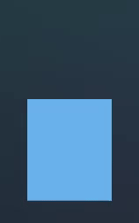 | tile 0x1E, teamnogg_action, frame 0x05, arg 0x01 | Team/score target Eggnogg for side 1. |
2 | tile 0x1E, teamnogg_action, frame 0x05, arg 0x02 | Team/score target Eggnogg for side 2. | |
: | 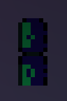 | tile 0x15, colouring_action, frame 0x3D, arg 0x00 | Vertical column. |
= | 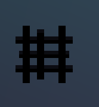 | tile 0x15, colouring_action, frame 0x1F, random arg | Decorative tile shaped like a hashtag. |
? | No tile | No tile is placed | Recognized no-op/reserved glyph. |
@ | 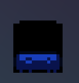  | tile 0x01 or 0x02, wall or floor action, frame 0x00, automatic/random arg | Automatic terrain. It becomes wall-like when supported by solid tile above; otherwise it becomes floor-like. |
A | 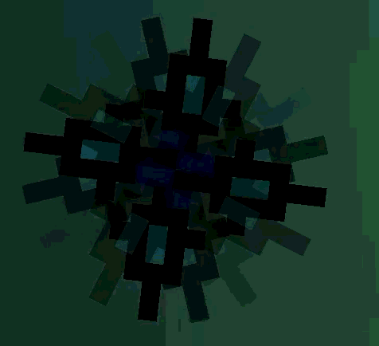 | tile 0x0B, spinny_action, frame 0x00, arg 0x04 | Spinning tile. |
C | 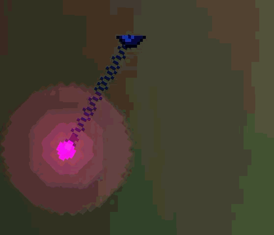 | tile 0x08, chandelier_action, frame 0x00, arg 0x1E | Swinging chandelier. |
E | 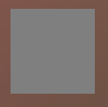  | tile 0x0A, tile_action_default, frame 0x00, arg 0x00 | Unmoving Eggnogg. Place ^ above it for the waving top. |
F | 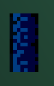 | tile 0x17, colouring_action, frame 0x59, arg 0x00 | Vertical column. |
G | 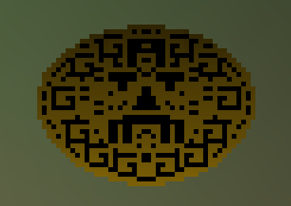 | 3×3 block of tile 0x07, decal_action, frames 0x28..0x3F | Large mural anchored above the glyph. Requires three rows of headroom and cannot touch either side edge. |
H | 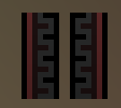 | tile 0x15, colouring_action, frame 0x06, arg 0x00 | Vertical column. |
I | 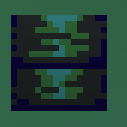 | tile 0x15, colouring_action, frame 0x1E, random arg | Vertical column. |
K | 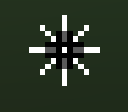 | tile 0x1C, spawn_thing_action, frame 0x00, arg 0x03 | Spiked-ball physics hazard with gravity and bounce. It deals 10 pixels of player damage and counts against the room spawn budget. |
L | 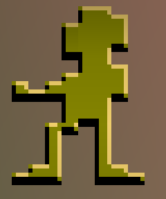 | 2×3 block of tile 0x0D, arty_action | Large art block that expands upward. Requires three rows of headroom and cannot touch either side edge. |
N | 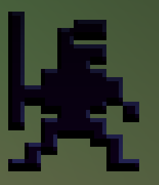 | 2×3 block of tile 0x0D, arty_action | Large art block that expands upward. Requires three rows of headroom and cannot touch either side edge. |
O | 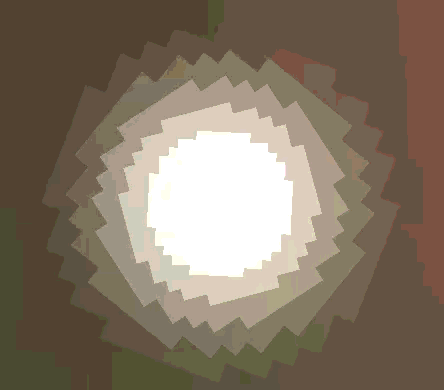 | tile 0x1B, sky_glow_action, frame 0x21, side-bit arg | Sun. |
P | 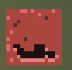 | tile 0x0C, puzzley_action, frame 0x00, arg 0x00 | Changing art tile. |
Q | 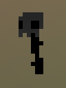 | tile 0x1A, colouring_action, frame 0x46 or 0x47, random arg | Skull on a stick. |
S | 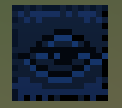 | tile 0x14, colouring_action, frame 0x07, arg 0x00 | Eye tile. |
T |  | Tentacle column using tile 0x13, tentacle_action | Large tentacle. |
W | .gif) .gif) | tile 0x0E, high_water_action, frame 0x05, arg 0x00 | High/deep water. |
X | 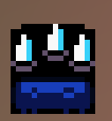 | tile 0x05, spikes_action, frame 0x00, random arg | Ground spikes. |
Y | 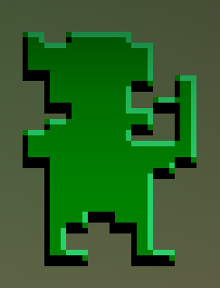 | 2×3 block of tile 0x0D, arty_action | Person art block that expands upward from the glyph. Requires three rows of headroom and cannot touch either side edge. |
Z | 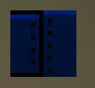 | tile 0x17, colouring_action, frame 0x05, random arg | Metal plate. |
^ |  | tile 0x09, eggnogg_action, frame 0x00, arg 0x00 | Waving Eggnogg. |
_ | 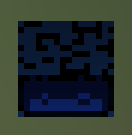 | tile 0x04, ceiling_action, frame 0x00, random arg | Ceiling tile. |
` |  | tile 0x15, colouring_action, frame 0x56, random arg | Fence. |
c |  | tile 0x08, chandelier_action, frame 0x00, arg 0x05 | Chandelier with a shorter swing than C. |
e |  | tile 0x15, colouring_action, frame 0x40, arg 0x00 | Decorative tile, possibly the top-left part of a head. |
f | 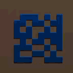 | tile 0x18, scroll_action, frame 0x2E, arg 0x00 | Scrolling decoration. |
i | 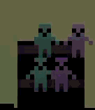 | tile 0x1D, crowd_action, frame 0x00, random arg | Crowd/backdrop tile. |
l |  | tile 0x1F, score_light_action, frame 0x00, arg 0x00 | Score light. |
m | 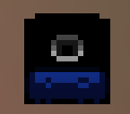 | tile 0x06, mine_action, frame 0x00, arg 0x00 | Mine. |
q |  | tile 0x1A, colouring_action, frame 0x6F, random arg | Hanging skeleton. |
s | 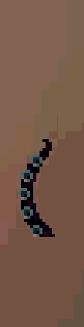 | Tentacle column using tile 0x13, tentacle_action | Small tentacle. |
t | 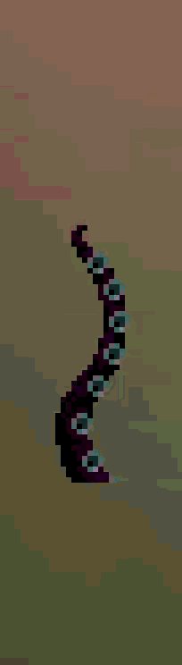 | Tentacle column using tile 0x13, tentacle_action | Large tentacle. |
u | 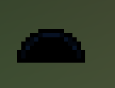 | tile 0x14, colouring_action, frame 0x6C, arg 0x00 | Arch. |
v | 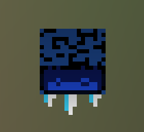 | tile 0x05, spikes_action, frame 0x02, arg 0x00 | Hanging spikes. |
w | 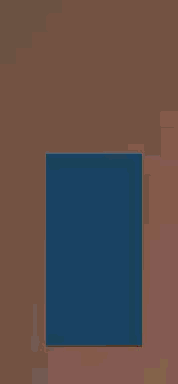 | tile 0x0F, water_action, frame 0x05, arg 0x00 | Shallow water. |
x |  | tile 0x14, colouring_action, frame 0x56, arg 0x00 | Fence. |
| | .png) | tile 0x19, colouring_action, frame 0x26, arg 0x00 | Vertical pipe. |
~ | .gif) .gif) | tile 0x10, waterfall_action, frame 0x60, row-parity arg | Waterfall. May fill the tile above with a decorative tile. |
Rooms may contain no more than 13 combined K, *, and m reset spawners. The native pool contains 16 records minus reserved/player occupancy, and K's native handler does not safely handle allocation failure.
V2 map-level tileset
"tileset": {
"sprite_sheet": "tiles.png",
"asset_sha256": null,
"cell_w": 16,
"cell_h": 16,
"padding": 0,
"native_layout": true,
"tiles": []
}sprite_sheet- A direct external PNG filename or
builtin:sprites|tiles|misc|glyphs. Entries inherit it. asset_sha256- Optional 64-hex external asset pin. The loader always computes the hash; omit this for normal authoring and all built-ins.
cell_w,cell_h- External grid cell dimensions, default 16, each 1..512.
padding- Inter-cell spacing removed during packing, default 0, range 0..64.
native_layout- External sheet only. When true, its first 128 row-major cells replace the native tile prefix for all unlisted ordinary glyph rendering. Extra cells are custom. Grid/image shape is otherwise unrestricted.
tiles- Zero to 64 symbolic definition objects. A native-layout-only package may leave it empty.
V2 requires a namespace-safe id: ASCII letters/numbers/._-, not beginning with dot/hyphen, maximum 43 characters (the runtime owner is map.<id>). Qualified tiles are map.<id>:<tile-id>.
V2 tileset.tiles[]
| Field | Type/default/limit |
|---|---|
id | Required unique namespace-safe local id, ≤47 chars. |
symbol | Required unique one-byte printable ASCII 0x20..0x7E, including space/native glyphs. |
name | Display/debug name, default id. |
collision | native (default), solid, pass_through, hazard. |
native_glyph | Safe single-cell fallback for native collision; omitted for presets. Presets resolve to @, x, X. |
force_mode | add (default) or set; needs a force axis. |
force_x, force_y | Each present axis opts in, finite -64..64. |
max_speed_x/y | Matching post-force absolute clamp 0..64; zero means unclamped. |
sprite_sheet, asset_sha256, cell_w/h, padding | Optional per-tile sheet/grid exception; same constraints as map default. |
sprite_index | Default 0, range 0..1,000,000; final range must fit the actual grid. |
frame_count | Default 1, range 1..256. |
frame_ticks | Default 1, range 1..3,600 deterministic ticks. |
animation | loop, ping_pong, or once. |
layer | Native batch bank 0 or 1. |
mirror_with_room | Default false; visual flip and declarative horizontal-force reversal. |
random_phase | Default false; deterministic per-cell animation phase. |
native_visual | replace or underlay; underlay draws resolved native terrain first. |
offset_x/y | Finite -4096..4096, default 0. |
scale_x/y | Finite nonzero -64..64, default 1. |
angle_degrees | Finite -360000..360000, default 0. |
tint | Exactly four finite RGBA channels in 0..1, default [1,1,1,1]. |
At most 16 unique external sheet/grid configurations may appear in one package. Safe fallbacks exclude multi-cell generators, no-op/blank, waterfalls/back-fillers, and generic K. A custom symbol may itself be any printable byte because alias binding occurs before native generation.
Special behavior belongs in auto-discovered map.lua, not JSON. See the exhaustive map Lua API.
External asset rules
- Direct filename in the package only: no slash, drive, absolute path,
.., ADS, or reparse file. - Valid PNG signature/IHDR, nonempty, ≤64 MiB, dimensions 1..4096 each.
- Declared grid must divide exactly after padding, contain at most 8,192 cells, and cover every frame range.
- The bridge rechecks path/header/full SHA-256 immediately before decode/pack, strips padding into a tight grid, and refuses global native atlas overflow.
- Missing/changed/invalid/unpacked assets remain unresolved and use the declared native fallback.
Online identity and atomic reload
A custom map advertises custom:<normalized-id>:<sig>. Signature input includes JSON, room text, loader-computed hashes of every external V2 sheet, and exact optional script bytes/bindings. Authors do not copy digests manually. Vanilla keys are vanilla:<index>.
Numeric selector positions are local and can change when packages are installed/reordered. The server matches stable keys and sends each client its own selector.
A successful scan atomically replaces the affected map/content owner set. A bad edit preserves the previous installed generation; a newly invalid package is skipped without blocking others. Active native pointers/script bind to a pinned generation until another map generation replaces them. Online rollback freezes reload.
Validation and conformance
- Collect and log all recoverable issues with package/file/field location, offending value, expected rule, and final skip reason.
- Hard parse failures still stop safely and never partially register a package.
- V1 compatibility keys may warn when unknown; V2 tileset/definition keys reject unknown fields.
- Native collision must remain valid even if custom visuals/script fail.
- Optional behavior is one bounded direct
map.lua, never JSON code. - Run
tests/run_v2_map_test.ps1andtests/run_map_script_test.ps1, then complete the fixed-address live test in the map guide.